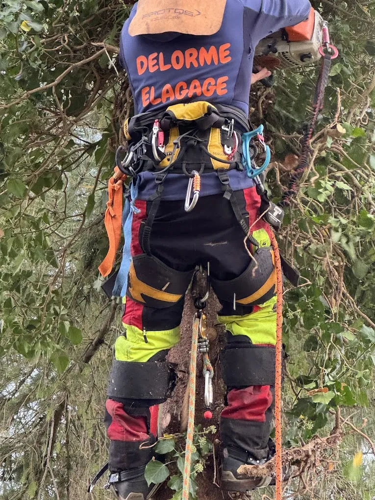
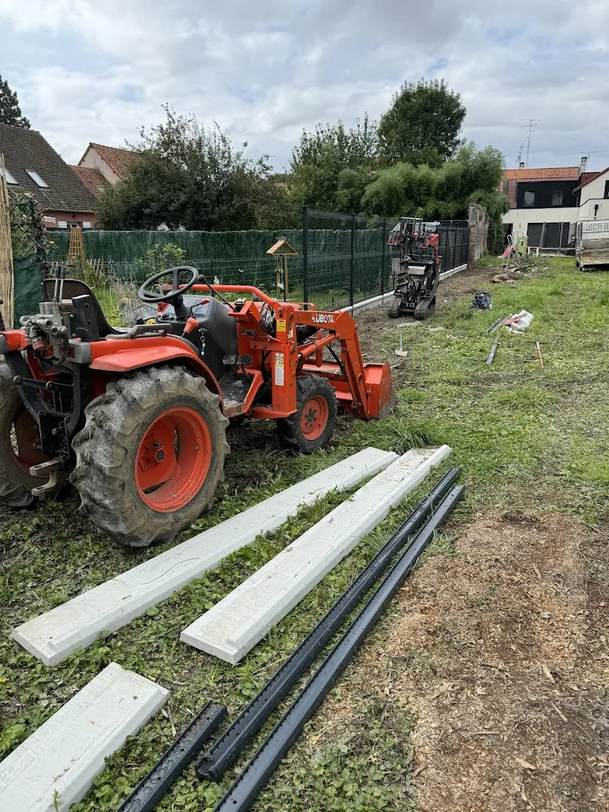
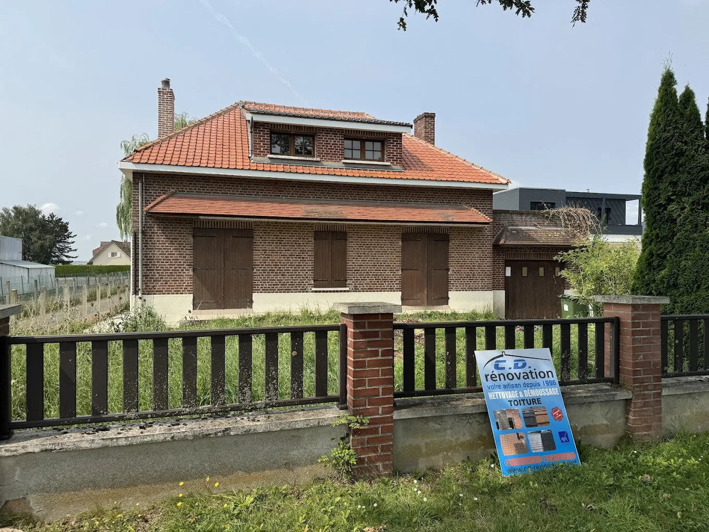
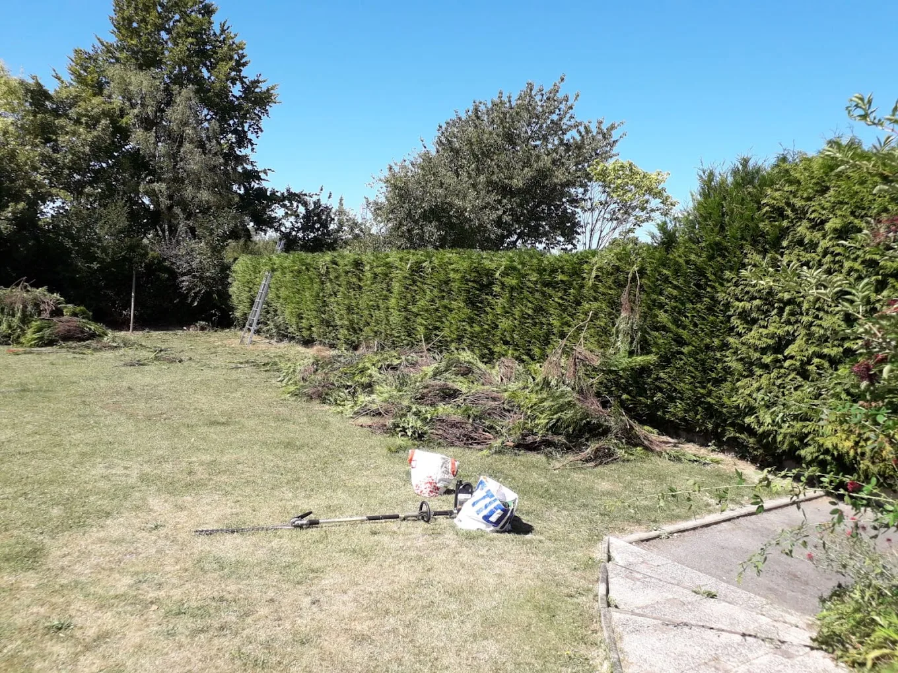
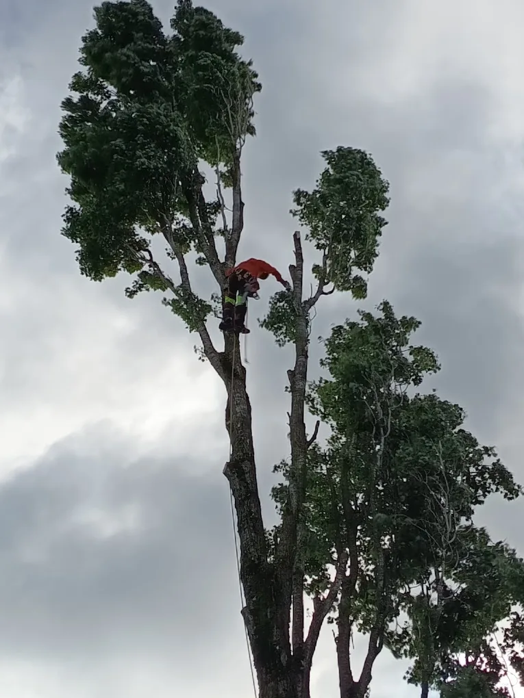

Intervention rapide
autour d'Amiens
Nous intervenons rapidement pour les besoins urgents comme les branches dangereuses, arbres fragilisés ou jardins devenus difficiles à entretenir.
"Élagueur pour
l'entretien de vos
extérieurs"
Delorme Élagage intervient rapidement
pour tous travaux d'élagage, d'abattage,
de taille de haie, de nettoyage de toiture
et d'entretien de jardins avec une
approche simple : intervenir proprement,
sécuriser les extérieurs et éviter les
tailles inutiles.

L'un des problèmes fréquents dans les travaux d'élagage reste l'état du terrain après chantier. Chez Delorme Élagage, nous faisons attention à conserver un extérieur exploitable rapidement. Les branches sont évacuées, les zones nettoyées et les coupes réalisées proprement.
Nous intervenons régulièrement dans des jardins avec accès compliqués autour de Salouël, Dury ou Boves où les maisons mitoyennes, clôtures et accès étroits demandent davantage d'organisation.
Voir PlusNous intervenons rapidement pour les besoins urgents comme les branches dangereuses, arbres fragilisés ou jardins devenus difficiles à entretenir.
Chaque chantier est préparé pour limiter l'impact sur vos extérieurs. Les branches sont évacuées, les zones nettoyées et le terrain reste exploitable rapidement après intervention.
L'élagage est le cœur de notre activité. Nous adaptons chaque intervention selon l'arbre, son environnement et les contraintes du terrain afin d'éviter les tailles excessives ou mal réalisées.
Nous privilégions des solutions adaptées à votre jardin et à votre budget, avec des explications claires avant chaque intervention.

Délimiter un terrain, sécuriser un jardin ou retrouver davantage d'intimité : nous sommes là pour réaliser vos projets. Delorme Élagage réalise la pose de clôtures pour les particuliers et professionnels autour d'Amiens.

Delorme Élagage intervient pour le nettoyage de toiture à Amiens et dans les communes voisines afin de redonner un aspect propre et préserver votre habitation.

Nous réalisons la taille de haies sur tous types de végétaux autour d'Amiens ainsi qu'à Corbie, Ailly-sur-Somme et dans les communes voisines.
"DELORME ELAGAGE a réalisé un travail remarquable pour notre copropriété LE MONT THOMAS à Amiens. Leur équipe est d'un grand professionnalisme, attentive aux détails et respectueuse de notre environnement.
Alex Philippe
"Un travail absolument parfait. Entreprise ponctuelle, efficace et très professionnelle. Nous sommes absolument ravis de l'intervention et des conseils prodigués par des employés sympathiques et extrêmement soigneux. À recommander sans hésitation.
Caroline Soufflet
"Avec Monsieur Delorme et sa super équipe, on devine de suite l'amour de la nature et du métier. Cela se ressent très vite dans les gestes et l'exécution des tâches : tout est RESPECTÉ !
Nathalie Rucart
Le végétal est une passion : voilà pourquoi nous offrons un service respectueux de l'environnement et de vos arbres. Les déchets verts issus des travaux d'élagage, de taille ou d'entretien sont évacués et valorisés pour préserver le cycle de la matière organique
Une de nos interventions dans le quartier Saint-Leu à Amiens pour l'élagage d'un grand érable devenu très dense au-dessus d'un jardin et d'une terrasse. Un arbre imposant : un travail pour notre élagueur-grimpeur.
L'objectif était d'alléger l'arbre sans casser sa forme naturelle ni assombrir complètement le jardin. Pour cela un diagnostic à hauteur de chaque branche est réalisé, le temps est pris pour préserver au maximum l'arbre afin notamment de ne pas le déséquilibrer.
Après quelques heures de travail, l'érable retrouvait un volume plus cohérent, davantage de lumière passait dans le jardin et les branches les plus fragiles avaient été sécurisées.
Faire appel à un expert c'est bénéficier d'un travail fait dans la sécurité, sans danger afin de séréniser durablement vos extérieurs.
Devis GratuitNotre savoir-faire bientôt à votre service

La meilleure période pour élaguer un arbre dépend surtout de son essence, de son état et du type de taille à réaliser. Dans beaucoup de cas, les interventions sont effectuées à l'automne, en hiver ou au début du printemps. À Amiens, certaines tailles de sécurisation peuvent aussi être réalisées toute l'année lorsqu'une branche devient dangereuse.
Voir plusOui, Delorme Élagage est assuré pour les travaux d'élagage, d'abattage et d'entretien extérieur réalisés à Amiens et alentours. Être assuré permet de travailler dans un cadre sécurisé et rassurant aussi bien pour le client que pour l'intervention elle-même.
Voir plusDelorme Élagage intervient à Amiens ainsi que dans l'ensemble de la métropole amiénoise. Nous nous déplaçons régulièrement dans les communes voisines comme Longueau, Rivery, Camon, Salouël, Corbie, Boves ou encore Ailly-sur-Somme, ainsi qu'à Abbeville, Albert, Beauvais, Arras et Saint-Quentin.
Voir plusContactez-nous pour réserver
un devis gratuit.
199 rue de Dreuil, 80000 Amiens